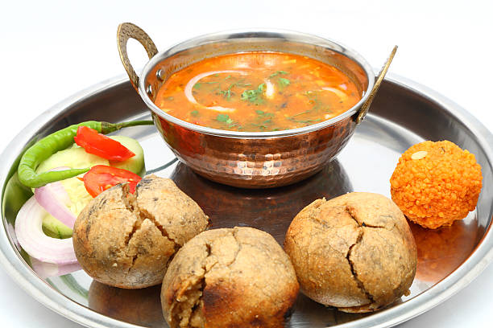

DAAL_BAATI

Description
DAAL BAATI
Dal Baati is a popular and traditional Rajasthani dish from India. It is a combination of two components: "Dal," which is a lentil curry, and "Baati," which are baked wheat dough balls. Together, they create a flavorful and satisfying meal.
INGRIDIENTS
- For Dall
1 cup split pigeon peas (arhar dal) or yellow split peas (toor dal)
1 small onion, finely chopped
2 tomatoes, finely chopped
2 green chilies, slit lengthwise
1-inch piece of ginger, grated
4-5 cloves of garlic, minced
1 teaspoon cumin seeds
1 teaspoon mustard seeds
1/2 teaspoon turmeric powder
1 teaspoon red chili powder (adjust to taste)
1 teaspoon coriander powder
1/2 teaspoon garam masala
A pinch of asafoetida (hing)
Few curry leaves (optional)
2 tablespoons ghee (clarified butter)
Salt to taste
Chopped fresh coriander leaves for garnish
-
For Baati
2 cups whole wheat flour
1/4 cup semolina (sooji)
1/4 cup ghee (clarified butter), melted
1/2 teaspoon salt
Water (as needed) to knead the dough
ENJOY!!!